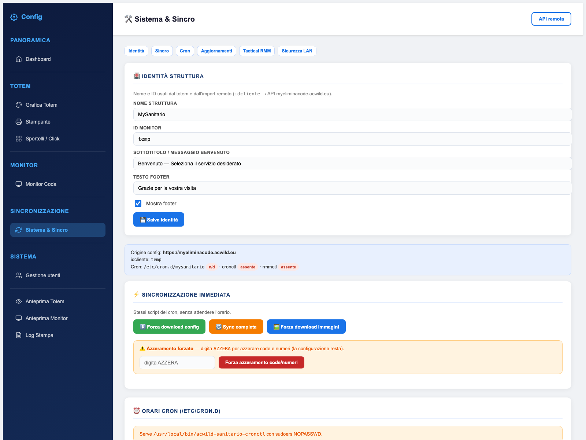

Versioning e aggiornamenti
Il software si aggiorna da GitHub senza toccare le configurazioni della struttura. Ogni applicazione crea un backup completo dei file sostituiti: se qualcosa va storto, si torna indietro copiando una cartella.

VERSION.json
Un piccolo file che identifica esattamente cosa sta girando su quel server. Viene riscritto dal sistema a ogni aggiornamento riuscito.
{
"version": "1.1.13",
"commit": "57e0a5aa901db2b35c5a16443a9dc126e7da89a6",
"branch": "linux",
"built_at": "2026-10-12T21:01:41+02:00"
}| Campo | Uso |
|---|---|
version | Confronto semantico con la versione remota |
commit | SHA del commit applicato: serve a capire se il codice corrisponde davvero |
branch | Ramo di provenienza; determina anche i file considerati |
built_at | Data e ora di build, con fuso orario |
update_config.json
{
"owner": "Acwildweb",
"repo": "Myeliminacode-Sanitario",
"token": "github_pat_xxxxxxxx",
"branch": "linux",
"protected_paths": ["connect.php", "printer_config.json", "..."]
}- Crea un token fine-grained
Su GitHub: accesso limitato al solo repository del progetto e permesso Contents: Read (più Metadata: Read, implicito).
- Copia il file di esempio
Da
update_config.example.jsonaupdate_config.json, poi compila owner, repo e token. - Lascia il ramo automatico o forzalo
Con
branchvuoto il sistema scegliewindows-iissu Windows elinuxaltrove. Su un server Linux puoi forzarelinux. - Non pubblicare il token
update_config.jsonè escluso da Git e dagli aggiornamenti. Il token non viene mai inviato al browser: l'interfaccia mostra solo la versione mascherata.
Come funziona il controllo
Il pannello chiama update_api.php con azione status, check, save_token o apply. Il controllo legge dal repository il VERSION.json del ramo, lo confronta con quello locale e riporta versione, commit e data.
| Azione | Cosa fa |
|---|---|
status | Legge la versione locale e lo stato della configurazione |
check | Interroga GitHub e dice se esiste una versione più recente |
save_token | Salva un nuovo token nel file di configurazione |
apply | Scarica e applica l'aggiornamento con backup |
L'API rifiuta le richieste che non arrivano da una sessione valida o da localhost. Se risponde “Non autenticato”, la sessione è scaduta: ricarica il pannello e riprova.
Cosa succede durante l'applicazione
- Lock
Viene creato un file di lock: due aggiornamenti non possono girare insieme.
- Download dello zipball
Il pacchetto arriva da
api.github.com/repos/<owner>/<repo>/zipball/<sha>e viene estratto in una cartella temporanea. - Filtro dei file protetti
Ogni percorso viene confrontato con
protected_pathse con.updateignore. Ciò che corrisponde viene saltato, compresoVERSION.json. - Backup dei file esistenti
Prima di sovrascrivere, il file attuale viene copiato in
backups/update_AAAAMMGG_HHMMSS/mantenendo la struttura delle cartelle. - Copia e chiusura
I nuovi file vengono scritti,
VERSION.jsonaggiornato con versione, commit e data, il lock rilasciato.
backups/
└── update_20261012_210141/
├── dashboard.php
├── config_stampante.php
└── ...Cosa non viene mai sovrascritto
| Percorso | Perché |
|---|---|
connect.php | Credenziali del database della singola struttura |
update_config.json | Token GitHub e configurazione del repository |
admin_auth.json, system_users.json | Utenti e password |
printer_config.json | Modello stampante e URL dell'agente locale |
totem_ui_config.json | Grafica, testi e identità della struttura |
immaginicliente/, videocliente/ | Contenuti multimediali caricati dal cliente |
tts_cache/ | Audio degli annunci, rigenerabile |
printer_logo.png, totem_logo.png | Loghi caricati dall'utente |
*.log, tocron/*.log | Registri locali |
backups/, update_tmp/ | Copie di sicurezza e file temporanei |
.git/ | Repository locale, se presente |
Se una personalizzazione non compare in .updateignore, finisce nella lista dei file sovrascrivibili. Prima di modificare un file del software, chiediti se è una configurazione: in quel caso va aggiunta al file di esclusione, non al codice.
Tornare alla versione precedente
- Individua il backup
In
backups/la cartella con la data più recente dell'aggiornamento da annullare. - Ferma il servizio
Chiudi il pannello e avvisa gli operatori: durante il ripristino le pagine possono rispondere a metà.
- Ripristina i file
Copia il contenuto della cartella di backup sopra l'installazione, mantenendo i percorsi.
- Riallinea VERSION.json
Rimetti versione e commit precedenti, altrimenti il pannello continuerà a credere di essere aggiornato.
- Verifica
Apri dashboard, totem e monitor; controlla il Log Stampa e prova una chiamata da uno sportello.
# esempio di ripristino da terminale
cd /var/www/sanitario
cp -a backups/update_20261012_210141/. .
sudo chown -R www-data:www-data .
php -r 'echo json_encode(json_decode(file_get_contents("VERSION.json")), JSON_PRETTY_PRINT);'Problemi tipici
| Messaggio | Causa | Rimedio |
|---|---|---|
| Config GitHub mancante | Non esiste update_config.json | Crealo dal file di esempio e inserisci il token |
| 401 / Bad credentials | Token scaduto o revocato | Genera un nuovo PAT e usa Aggiorna token |
| 403 rate limit | Troppe richieste anonime | Verifica che il token sia presente e valido |
| Nessuna versione più recente | Il ramo non è stato aggiornato o il confronto non vede il nuovo tag | Controlla VERSION.json sul repository |
| Impossibile creare cartella backup | Permessi di scrittura mancanti | Assegna la proprietà della cartella all'utente del web server |
| Aggiornamento bloccato | File di lock rimasto da un tentativo interrotto | Rimuovi il lock solo dopo aver verificato che non ci sia un processo attivo |
Aggiorna a fine giornata, dopo l'azzeramento: se qualcosa non funziona hai tutta la notte per ripristinare. Prima dell'aggiornamento salva una copia di system_users.json, connect.php e delle configurazioni locali.
linux
Documento statico, consultabile senza connessione